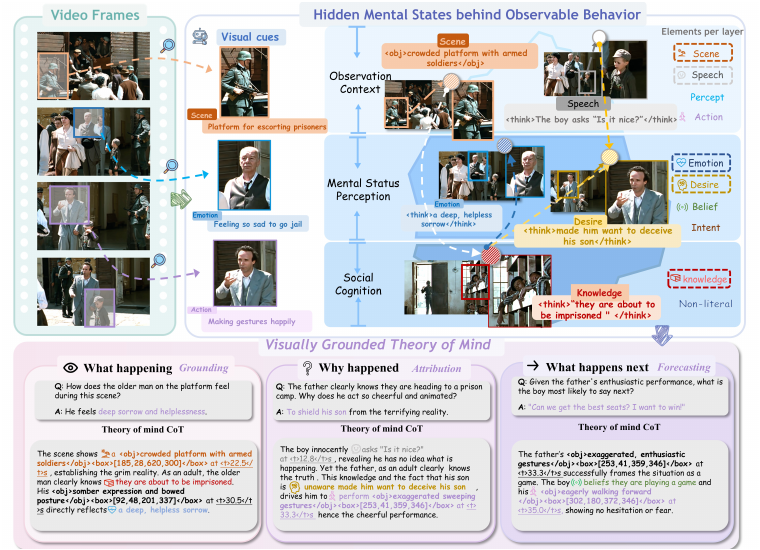

EMNLP 2026 Main · Accepted
ToM-Video: A Theory-of-Mind Video Benchmark with Spatio-Temporal Grounded Reasoning
Understanding beliefs and intentions in video through explicit spatial and temporal evidence.
Method & results
ToM-Video includes 1,487 source videos, 4,666 clips, and approximately 41,000 question–answer pairs, with timestamps, key-frame bounding boxes, and evidence chains. INSPIRE combines supervised fine-tuning with grounding and theory-of-mind reinforcement learning.
Qwen3-VL-8B achieves 76.2% on the ToM-Video validation set, a 5.4 percentage-point improvement over the SFT stage. Social-IQ 2.0 accuracy improves from 63.41% to 65.12%.